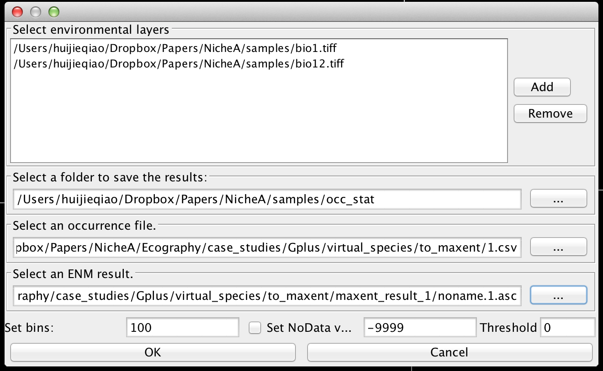
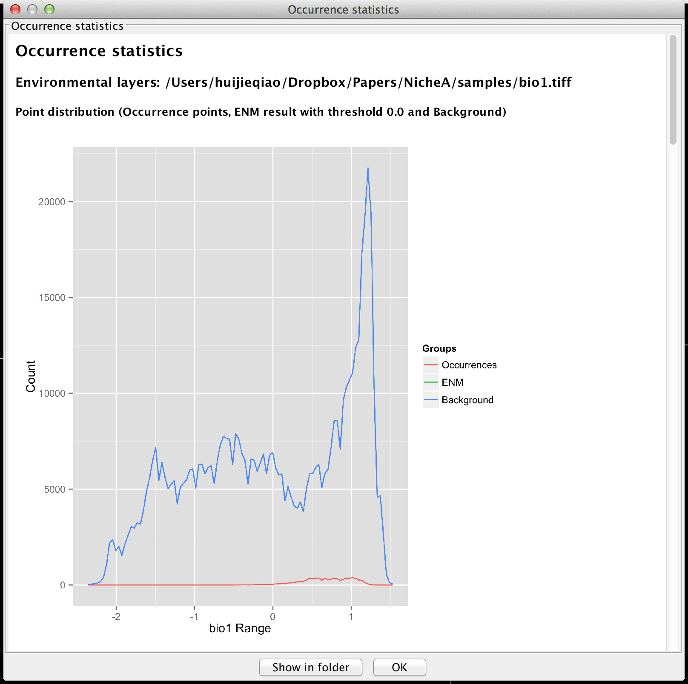
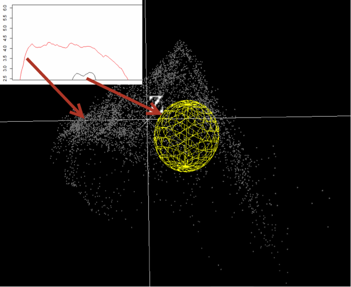

Occurrence statistics
This function is used to count the number of the occurrence points, ENM's result and the background within a given span of the environmental variables, which are shown as histogram, lines, and log-transferred lines. An R script used to generate the figures above is saved in the result folder. A data file is also provided for further usages.
Figure 1. The interface for this function.

Figure 2. The result dialog.

Figure 3. Relationship between the virtual scenario and the diagram.
In the diagram, the red curve represents the distribution of the background on the x-axis.
The black curve represents the distribution of the points inside of the yellow ellipsoid on the x-axis.
